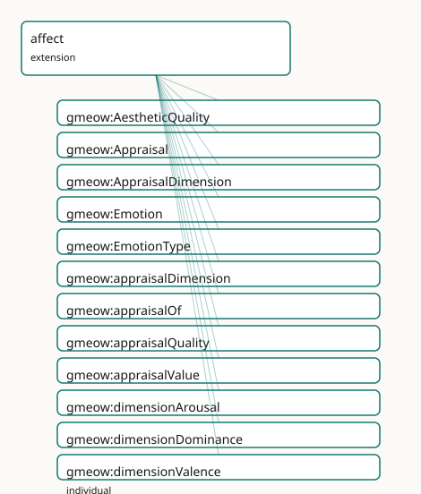

GMEOW Affect Module
- IRI: https://blackcatinformatics.ca/gmeow/slices/affect
- Tier: extension
Group: extensions
What This Slice Covers
This slice owns 25 terms and contributes 0 mapping or projection rows. Use it when its terms match the native fact you want to preserve; use the linkage tables to see how those facts leave GMEOW for consumer vocabularies.
Dependencies
Consumers
- The lbox principia importer (EPIC: affect/aesthetic annotations) and the narrative arc samples (:
sampleStatedraws onEmotionTypeby soft reference, never dependency). DELIBERATELY THIN (P15): growth requires a new consumer; the size budget and expansion bar are recorded in docs.md.
Local Map

Examples
Two Critics
- Source:
slices/extensions/affect/examples/two-critics.ttl - GMEOW terms:
gmeow:Appraisal,gmeow:BookRelease,gmeow:Emotion,gmeow:Expression,gmeow:Person,gmeow:Work,gmeow:appraisalDimension,gmeow:appraisalOf,gmeow:appraisalQuality,gmeow:appraisalValue
# SPDX-FileCopyrightText: 2026 Blackcat Informatics® Inc. <paudley@blackcatinformatics.ca>
# SPDX-License-Identifier: CC-BY-4.0
# Worked example : the slice's whole doctrine in one scene — an
# emotion inhering in an agent (blended type, P9), and the same work
# appraised by two critics whose readings disagree and COEXIST: one finds
# sublimity (with high arousal), the other kitsch. No winner exists.
@prefix gmeow: <https://blackcatinformatics.ca/gmeow/> .
@prefix ex: <https://blackcatinformatics.ca/gmeow/examples/> .
@prefix rdfs: <http://www.w3.org/2000/01/rdf-schema#> .
ex:reader a gmeow:Person ; rdfs:label "the reader"@en .
ex:awe a gmeow:Emotion ;
rdfs:label "the reader's awe"@en ;
gmeow:emotionBearer ex:reader ;
gmeow:emotionType gmeow:emotionFear , gmeow:emotionSurprise .
# The minimal WEMI spine the shapes demand (the gts example precedent).
ex:novelWork a gmeow:Work ; rdfs:label "the appraised work"@en .
ex:novelExpression a gmeow:Expression ;
rdfs:label "the appraised text"@en ;
gmeow:realizes ex:novelWork .
ex:novel a gmeow:BookRelease ;
rdfs:label "the appraised release"@en ;
gmeow:embodies ex:novelExpression .
ex:criticA a gmeow:Person ; rdfs:label "critic A"@en .
ex:criticB a gmeow:Person ; rdfs:label "critic B"@en .
ex:sublimeReading a gmeow:Appraisal ;
gmeow:vantage ex:criticA ;
gmeow:appraisalOf ex:novel ;
gmeow:appraisalQuality gmeow:qualitySublimity .
ex:arousalReading a gmeow:Appraisal ;
gmeow:vantage ex:criticA ;
gmeow:appraisalOf ex:novel ;
gmeow:appraisalDimension gmeow:dimensionArousal ;
gmeow:appraisalValue 0.9 .
ex:kitschReading a gmeow:Appraisal ;
gmeow:vantage ex:criticB ;
gmeow:appraisalOf ex:novel ;
gmeow:appraisalQuality gmeow:qualityKitsch .
Terms
Classes
| Term | Label | Definition |
|---|---|---|
gmeow:AestheticQuality |
Aesthetic Quality | A qualitative aesthetic reading — an OPEN vocabulary seeded with elegance, sublimity, kitsch. No AestheticQuality hierarchy exists or ever will (Principle 9):... |
gmeow:Appraisal |
Appraisal | An affective or aesthetic reading of something, as an observation: vantage = the appraiser. Dimensional (PAD: a valence/arousal/dominance value) or qualitative... |
gmeow:AppraisalDimension |
Appraisal Dimension | A dimensional axis of affective appraisal — an OPEN vocabulary seeded with the PAD triad: valence (pleasant ↔ unpleasant), arousal (activated ↔ calm), dominanc... |
gmeow:Emotion |
Emotion | An emotion as an intrinsic mode inhering in one agent (the Desire/Intention grounding). Episodic temporal scope rides validFrom/validUntil on the stateme... |
gmeow:EmotionType |
Emotion Type | The kind of an emotion — an OPEN value vocabulary seeded with Plutchik's primary eight (the EmotionML standard set). Registry-independent and contestable, neve... |
Properties
| Term | Label | Definition |
|---|---|---|
gmeow:appraisalDimension |
appraisal dimension | The dimension a dimensional appraisal reads. At most one per appraisal (SHACL — one cell, one reading; a PAD triple is three Appraisals sharing a vantage). Ope... |
gmeow:appraisalOf |
appraisal of | What is appraised — an agent's state, a work, an event, an emotion (⊑ observedFeature, the bridge idiom). Range intentionally open. Functional: one apprais... |
gmeow:appraisalQuality |
appraisal quality | The aesthetic quality a qualitative appraisal reads. NOT functional: one cell may attribute several coexisting qualities. Open vocabulary (sh:nodeKind sh:IRI). |
gmeow:appraisalValue |
appraisal value | The dimensional reading, on whatever scale the appraising tradition declares (a rubric's ScoreScale when the rubrics facility is loaded; plain decimals otherwi... |
gmeow:emotionBearer |
emotion bearer | The agent in whom this emotion inheres. Functional and mandatory (SHACL): an intrinsic mode has exactly one bearer (the intentBearer pattern). |
gmeow:emotionType |
emotion type | The kind(s) of this emotion. NOT functional: blended emotions carry several types, and classifications from different traditions coexist (Principle 9). At leas... |
Individuals
| Term | Label | Definition |
|---|---|---|
gmeow:dimensionArousal |
arousal | The arousal dimension — activated versus calm. |
gmeow:dimensionDominance |
dominance | The dominance dimension — in control versus controlled. |
gmeow:dimensionValence |
valence | The valence dimension — pleasant versus unpleasant. |
gmeow:emotionAnger |
anger | The anger emotion type (Plutchik primary). |
gmeow:emotionAnticipation |
anticipation | The anticipation emotion type (Plutchik primary). |
gmeow:emotionDisgust |
disgust | The disgust emotion type (Plutchik primary). |
gmeow:emotionFear |
fear | The fear emotion type (Plutchik primary). |
gmeow:emotionJoy |
joy | The joy emotion type (Plutchik primary). |
gmeow:emotionSadness |
sadness | The sadness emotion type (Plutchik primary). |
gmeow:emotionSurprise |
surprise | The surprise emotion type (Plutchik primary). |
gmeow:emotionTrust |
trust | The trust emotion type (Plutchik primary). |
gmeow:qualityElegance |
elegance | The elegance aesthetic quality. |
gmeow:qualityKitsch |
kitsch | The kitsch aesthetic quality. |
gmeow:qualitySublimity |
sublimity | The sublimity aesthetic quality. |
Guide
affect
Slice:
https://blackcatinformatics.ca/gmeow/slices/affect· tier: extension
Emotions and appraisals (EPIC) — the thinnest slice in the repo, by commitment.
The thinness budget
This slice ships exactly: Emotion ⊑ gufo:IntrinsicMode (the
Desire/Intention pattern), an open Plutchik-seeded EmotionType vocabulary,
and Appraisal ⊑ Observation with the PAD dimensions and an open
AestheticQuality vocabulary. Nothing else. Principle 15 discipline:
growth requires a new consumer, not modeling pleasure. The bar for
expansion: a sensory-environment or narrative consumer demanding (e.g.) an
emotion-tenure class, appraisal provenance structure, or a cognitive
appraisal-theory layer. Until then, requests to grow this slice should be
declined with a pointer here.
What deliberately does NOT exist
- No emotion tenure class — episodic scope rides
validFrom/validUntilon the statement; promote to theStandpointTenureidiom only on consumer demand. - No attributed-vs-self-report machinery — that's the vantage axis
(self-report is top authority for the subject's own standpoint, the
facetVantageprecedent). - No emotion or aesthetic hierarchies — open value vocabularies, contested by design (P9): traditions disagree about the inventory, and the disagreement is data.
- No hard rubrics dependency —
appraisalValueis read against a rubricScoreScalewhen loaded, plain decimals otherwise (soft reference).
Deferred to the compiler-arc window
MFOEM rows (linkage-only — BFO lineage), EmotionML vocabulary IRIs, WordNet-Affect closeMatch rows; the W3C EmotionML projection with declared loss (vantage collapses to EmotionML's single-annotator model — flagged loudly). Target list fixed in.